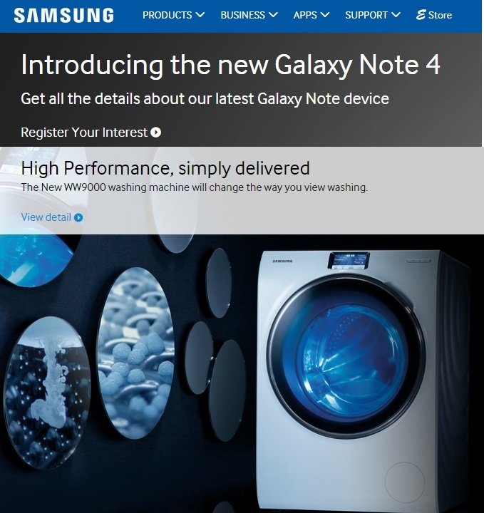
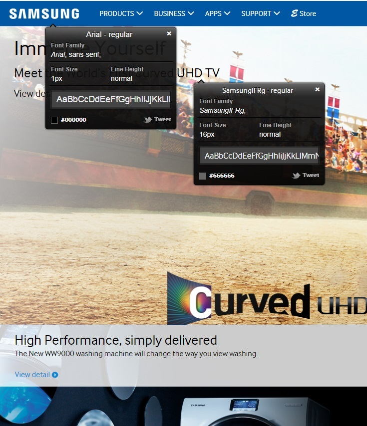

DESIGN THEMES
The website design is quite simple as many other websites which introduce information of their products.
Latest products' photos with brief descriptions mainly comprise the main page and it emphasise the items.
As the logo of SAMSUNG represents blue and white, the website is designed with only a few colours such as blue, white and black.

SAMSUMG
PAGE LAYOUT
A few navigation bars are used and the website seems to follow modern simple layout style.
Only a few font styles such as Arial and SamsungIFRG are used according to
What Font
